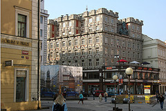
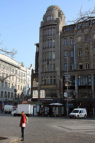
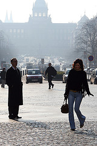
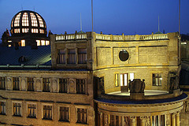
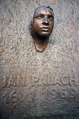
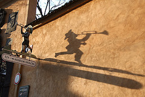
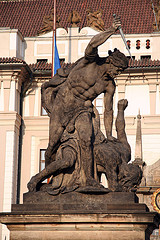
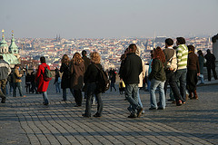
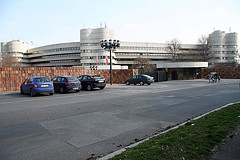
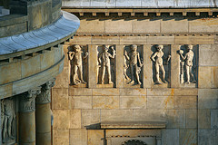

Prizery v Praze
Jedna od mogućih foto priča o Pragu. Poneki trg, zgrada, skulptura, detalj...
Moglo bi se napraviti bar 10-15 ovakvih foto-kolaža a da se ni u jednom trenutku ne ponoviš. Ovo je dakle viđenje grada kroz kameru užurbanog šetača koji ima tačno 3 sata slobodno za šoping i šetnju.
|  Palata Adria, jedna raskošna zgrada odmah tu kod Vaclavskih namesti. Constructed in 1923-5, this building is a sonnet to Rondocubism. |  In 1912, it was decided to demolish the corner building and the two neighbouring buildings to obtain enough space to build today's Koruna Palace for the life insurance company 'První česká všeobecná společnost pro pojišťění na život'. The architects of the project were Antonín Pfeiffer and Matěj Blecha. The style of Koruna Palace is categorised as being so-called geometric modernism with late secession (art deco) inspired by geometric motifs leaning towards cubism. |
|  Osim što su Continually the most significant place in Czech history - from the declaration of the independent Czechoslovak Republic in 1918 to Jan Palach setting fire to himself in 1969 in protest against the Warsaw Pact invasion to the defining moment of the Velvet Revolution have all taken place here., mnogi turisti prepoznaju ovaj deo grada kao centar šoping aktivnosti. Sve velike radnje i š. centri nalaze se tu negde (mislim na sve te Zare, Mangoe, H&Move, Kenvelove, i desetine drugih). | The 65m tall Powder Tower is the gateway to the Royal Route which leads through the Old Town over the Charles Bridge to the castle up the hill. The gothic Powder Tower was built in 1475 during the reign of King Vladislav II at the site of an 11th century gate, one of Prague's 13 original city gates. Originally the tower was known as the Mountain Tower, but ever since the structure was used as a gunpowder storage space in the 17th century, it is known as the 'Powder' Tower. |
|  Ako sam dobro shvatio, ovo je ono što se kod nas u Beogradu zove Glavna pošta, a ovde Česká pojišťovna. I to Hlavne. |  Jan Palah - heroj jedne generacije. Ovo spomen obeležje nalazi se na zgradi Filozofskog fakulteta čiji je student bio, na današnjim Namestima, pogađate, Jana Palacha. |
|  Muzeum hračky, tj. Muzej igračaka, nalazi se na Hradčanima, nije ništa posebno, ali eto - ovaj predvečernji trenutak, ovako obrađen zid i konačno zanimljiva senka dovoljan su razlog da se i ovaj prizor zabeleži. |  A ovo je... tako jedna skulptura takođe na Hradčanima, inspirasana nekim starozavetnim motivom koliko vidim. |
|  E ovako izgleda nagnuti plato na ulazu u Prague Castle; fantastičan pogled na grad hiljadu tornjeva, milijardu turista itd. |  Daleko od centra grada, u Prahi 6 (Dejvice), što mu dođe kao neko praško Dedinje samo još dosta dalje, ima i ovakvih prizerya - Hotel Praha was officially opened in 1981 and can be considered as an unparalleled example of the Czech modern architecture of the 1980s. The hotel was exclusively constructed for the purpose of providing accommodation for official state visits and delegations. Sada je to jedan od onih najprestižnijih hotela sa svih pet zvijezdica. |
|  Ništa više do lep detalj sa Hlavne pošte, kako se ukazuje turisti i/ili poslovnom čoveku smeštenom u hotelu Clarion. | Municipal House, Obecní dům.
The municipal house is the most spectacular Art Nouveau building in Prague. Its construction dates back to the beginning of the 20th century (1906-1912). Since then it has been the host of many concerts and exhibitions and has been admired by millions of tourists and visitors. It also hosted important historical events such as the proclamation of the Czechoslovak Republic on October 28, 1918 and the meetings between the Civic Forum and the communist regime in November 1989. |
Komentari
 RSS feed
RSS feed
 sadržaji se objavljuju pod
sadržaji se objavljuju pod
Citam u The Prague Post da se u 2006. prvi put posle 17 godina broj posetiliaca u Pragu smanjio, istina, samo za pola posto. Zbog toga se vec preduzimaju ozbiljne mere da se to promeni u 2007. Zamisljam takvu situaciju kod nas: Prvo bi nekoliko godina svi neigirali da se to desilo. Posle bi negirali da treba nesto da se preduzme. i tako bi rosla decenija
la lara | 18.03.07 02:04